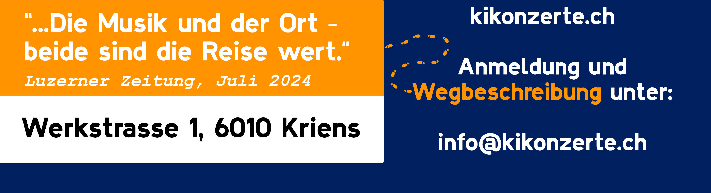

UN:VERBUNDEN
So, 22.02.26, 17:00
Elena Schneider und Paula Soriano Ibáñez erforschen als Duo «Luft-Linien» Distanz und Verbundenheit mit zeitgenössischen Kompositionen für Stimme und Saxofon.

Blitze und ihre Folgen
So, 29.03.26, 17:00
Neben Improvisationen und Konzeptstücken bringt das Trio III-VII-XII in Zusammenarbeit mit Ursina Maria Braun und Roland Moser erarbeitete Werke zur Aufführung.

Feuerfalter
So, 26.04.26, 17:00
Despina Corazza und Lukas DeRungs verbinden langjährige Freundschaft mit musikalischem Experiment. Jazz/Pop-Covers und Eigenkompositionen.

